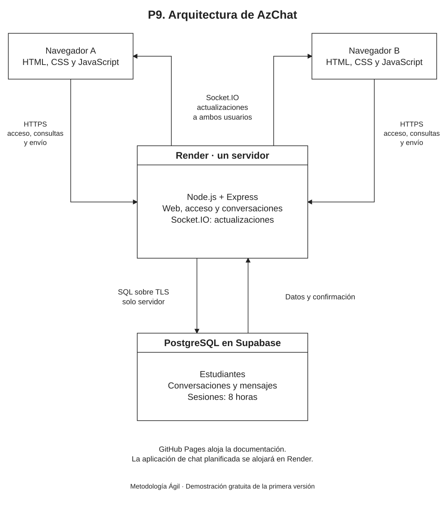

En pocas palabras
La página web se conectará a un servidor en Render. Ese servidor gestionará el acceso y los mensajes y utilizará una base de datos PostgreSQL en Supabase.
- La página y el servidor se alojarán juntos para simplificar la conexión.
- Se prevé empezar con servicios gratuitos y aceptar la espera de arranque después de inactividad.
Vista del modelo

Seleccione la imagen para verla a tamaño completo.
Ver explicación y detalles del paso
Arquitectura elegida
AzChat utiliza una arquitectura cliente–servidor con una base de datos relacional. La primera versión tendrá una aplicación Node.js en Render y una base PostgreSQL en Supabase. El mismo servidor entrega la web y atiende su acceso y mensajería.
Esta organización mantiene una única dirección para la aplicación y evita separar el alojamiento de la página del servidor. El diseño se orienta a una demostración gratuita, con crecimiento inicial de 4 a 30 usuarios conectados.
Diagrama de arquitectura
Modelo editable: Arquitectura_AzChat.drawio. Puede abrirse en Draw.io mediante Archivo → Abrir desde → Dispositivo.
Capas del sistema
| Capa | Responsabilidad |
|---|---|
| Presentación | HTML, CSS y JavaScript en el navegador. Muestra campos, conversaciones y mensajes. El propio servicio de Render entrega estos archivos, de modo que la página y la API comparten el mismo origen. |
| Aplicación y comunicación | Node.js con Express, ServicioAcceso y ServicioChat. Las peticiones HTTPS registran, verifican acceso, consultan y guardan. Socket.IO distribuye las actualizaciones de mensajes ya conservados. |
| Persistencia | PostgreSQL administrado en Supabase. Conserva estudiantes, conversaciones, mensajes y los registros técnicos de sesión. El servidor accede mediante el controlador pg; el navegador no se conecta a la base. |
Tecnologías mínimas previstas
| Tecnología | Finalidad |
|---|---|
| HTML, CSS y JavaScript | Interfaz web sin un framework de componentes ni un paso de compilación obligatorio. |
| Node.js y Express | Un solo servidor entrega la página y ofrece las peticiones de acceso y chat. |
| Socket.IO | Canal de actualizaciones y reconexión. La aplicación no utiliza este canal para poner en cola los envíos pendientes. |
| PostgreSQL y pg | Historial persistente, consultas con parámetros, relaciones y restricciones que impiden duplicar parejas o intentos de envío. |
| express-session y connect-pg-simple | Sesión compartida por las peticiones y las conexiones; almacenamiento en PostgreSQL con vencimiento de 8 horas. |
| argon2 | Creación y comprobación de hashes Argon2id de contraseñas. |
Se utilizará una versión LTS de Node.js compatible con las bibliotecas al comenzar la construcción. Las dependencias se fijarán en el proyecto y su archivo de bloqueo. El diseño no requiere un ORM ni servicios separados por cada función.
Ingreso sin correo ni teléfono
El servidor verificará el nombre de usuario o código y la contraseña mediante ServicioAcceso. Supabase se utilizará como PostgreSQL administrado. Su inicio de sesión con contraseña documentado se basa en correo o teléfono; ese flujo de Supabase Auth no forma parte de esta arquitectura.
La sesión tendrá una duración absoluta de 8 horas desde el ingreso. Se guardará en la misma base para no depender de la memoria del proceso. El servidor verificará su vigencia para las consultas y al establecer el canal en directo, y lo desconectará al vencer o cerrar sesión.
Recorrido de un mensaje
- El navegador envía una petición HTTPS con la conversación, el texto y el identificador del intento.
- El servicio verifica la sesión, la participación en el chat y el contenido; obtiene el emisor del acceso verificado.
- PostgreSQL conserva el mensaje o reconoce que ese mismo intento ya está guardado. Un intento reutilizado con otro contenido se rechaza.
- El servidor devuelve el registro conservado y notifica a los dos usuarios mediante canales internos de Socket.IO.
- Los navegadores muestran el mensaje una sola vez. La reconexión vuelve a consultar el historial, sin reenviar textos pendientes automáticamente.
Acceso a la base y protección de datos
- La conexión PostgreSQL se realizará con TLS y validación del certificado. La cadena se obtendrá del panel del proyecto; no se inventarán el host ni las credenciales.
- Se utilizará el pooler (intermediario de conexiones) en modo sesión de Supabase cuando el alojamiento requiera acceso IPv4. La aplicación compartirá un grupo inicial de hasta 5 conexiones, incluidas las usadas por el almacén de sesiones.
- Las tablas de la aplicación y las sesiones se ubicarán en un esquema privado,
azchat, sin exponerlo por la Data API. El rol de la aplicación tendrá únicamente los permisos necesarios. - Las reglas de acceso se aplicarán en el servidor antes de cada operación. El servicio no confiará en un emisor ni en un canal privado elegido por el navegador.
- Los canales internos se asignarán por el usuario y la sesión verificados. Las conexiones de una sesión se desconectarán al salir y al cumplirse sus 8 horas.
- Las peticiones de escritura y las conexiones en directo se limitarán al origen de la aplicación. La cookie segura no sustituye la comprobación del origen ni de los permisos.
- Las contraseñas se procesarán con una biblioteca de hash y se limitarán los intentos de acceso. Las respuestas no incluirán hashes, códigos ni nombres completos de otras cuentas.
Configuración prevista
| Valor | Uso |
|---|---|
| DATABASE_URL | Credencial secreta de conexión PostgreSQL, disponible únicamente en el servidor. |
| SESSION_SECRET | Secreto del servidor para firmar el identificador de sesión. No se publica en GitHub ni en la web. |
| APP_URL | Origen HTTPS permitido de la aplicación en Render. Se usa para verificar las peticiones y conexiones. |
| PORT | Puerto que proporcione el alojamiento. Node.js atenderá en la interfaz y el puerto esperados por Render. |
Modalidad gratuita y capacidad
Render gratuito puede suspender el servicio tras 15 minutos sin tráfico y tardar aproximadamente un minuto en arrancar. Esa espera inicial es una condición de la demostración gratuita. El criterio CA-13 de P5 se ejecutará con el servidor activo y los 30 usuarios ya conectados; conserva la meta de hasta 3 segundos por mensaje.
Los datos y las sesiones se guardarán en PostgreSQL, de modo que no dependan del disco temporal de Render. Los planes gratuitos están sujetos a las cuotas y condiciones del proveedor. La disponibilidad de los proyectos se revisará antes de la demostración.
La primera versión usa una instancia del servidor. El crecimiento inicial se atenderá con consultas acotadas, índices y un ajuste de recursos según las pruebas. Antes de utilizar varias instancias deberá incorporarse una coordinación compartida de las notificaciones. Ese cambio se evaluará si la carga futura lo requiere.
Estado del proyecto y pasos siguientes
P7, P8 y P9 describen el análisis y el diseño. El sistema de chat todavía requiere construcción y pruebas. P10 presenta la interfaz, P11 define el modelo de datos y P12 organiza la implementación por entregas pequeñas.
Referencias técnicas
Equipo del proyecto
| Apellidos y nombres | Código |
|---|---|
| Apaza Quispe Antonio Vicente | 236876 |
| Arias Ramirez Alex | 236104 |
| Chura Chambilla Raul Cristian | 236567 |
| Escobedo Arapa Kenyi Blanca | 236171 |
| Mamani Pari Yimmy Jonathan | 237317 |
| Quispe Ramos Daniel Jhosimar | 236568 |
| Roque Mamani Vidman Ruis | 236232 |
| Vidal Fuentes Jordy Anthony | 236535 |